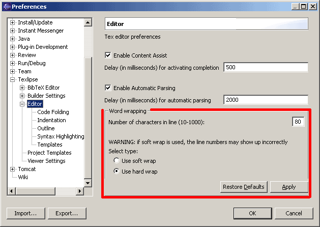

TeXlipse supports three different line wrapping modes:
The workbench menu contains a toggle button for text wrapping. The toggle button is visible when at least one .tex-file is open. Wrapping is set on and off from this toggle. If the toggle button is down then word wrap is used. Releasing the toggle disables word wrap.
The user can configure line wrapping in the Texlipse preferences page. The page contains a radio button list from where the user can determine is line wrapping mode soft wrap or hard wrap. The user can also determine the maximum line width (line width works now only with hard wrap). The default line width is 80 characters.

Do note that LaTeX does not care about a white space in normal text, so whether the linebreaks are in the file itself or only displayed on the screen does not affect the output of LaTeX.
Soft wrap means that the file being edited is not changed by the wrapping, ie. no line delimiters will be automatically added to the document. Lines being only displayed as if they were wrapped. Hard wrap on the other hand adds line delimiters when necessary, thus making the wrapping a part of the document. WARNING: As of Eclipse 3.0, there is a bug in Eclipse's soft wrap implementation, causing the positions in the vertical bar (the code folding an error annotations, the position markers) to be out of synch with the editor view (the problem is purely visual, the folds work correctly). Additionally, soft wrapping is quite slow. Due to these issues, the user is advised to proceed with caution if intending to use soft wrap.
In Hard wrap mode, TeXlipse examines the line length after every typed white space. If the length of the line is greater than the maximum value, the last white space position before maximum is searched and a line delimiter is inserted there. If there is not any white space before the maximum value, then the first one after maximum is searched and the line delimiter is inserted there.
If the length of the next line + the length of the wrapped line from the inserted line delimiter to the end of the line is less than the maximum line length, the wrapped text is inserted to the beginning of the next line. If the line length after this insertion would be greater than the maximum length, a new line is added.
Note that the white spaces due to indentation are not counted. If we assume our indentation to be 15 characters, the maximum line length to be 80 and we write a string that is 70 characters long (does not contain white spaces), then the total length of the line will be 85.
The user can perform a hard wrap function to the selected text area. To use this feature, the user must first select the area and then press Esc Q or select Latex > Correct Line Wrap. The user can also select the text, activate the conext menu (right-click the text editor view) and select the Correct Line Wrap entry from context menu.
Note 1: The comment lines are ignored.
Note 2: The function takes the indentation of the first selected line and uses that for all lines in that paragraph. When the function finds a new paragraph it will examine the new indentation from the first line and uses that for every line in that paragraph.